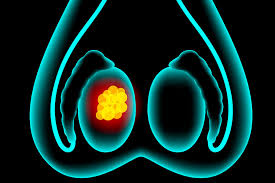
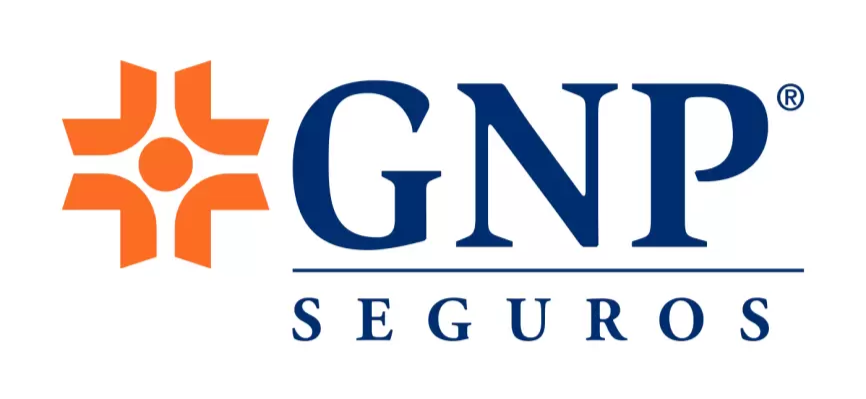
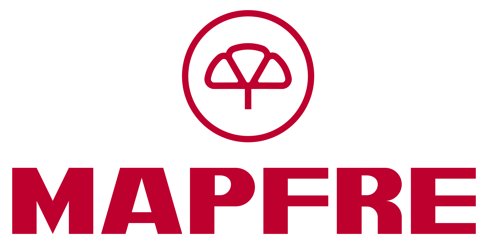
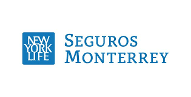
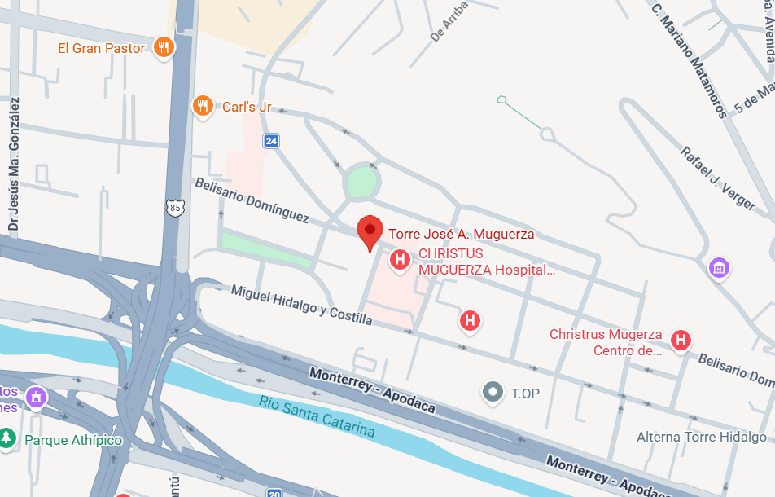

Liderazgo en Oncología Médica y Medicina de Precisión
El Dr. Zayas-Villanueva se especializa en el abordaje multidisciplinar de los tumores de Riñón, Próstata, Vejiga y Testículo. Su enfoque combina la oncología médica de alta complejidad con un equipo de alta excelencia, de esta forma lograr personalizar el tratamiento de cada paciente.

Compromiso con la Precisión
Consulta oncológica, orientación diagnóstica y planes terapéuticos personalizados basados en evidencia, biología molecular e inmunoterapia.
Trayectoria Académica
Formación de Clase Mundial
Formación en instituciones líderes y experiencia clínica enfocada en el manejo de cáncer genitourinario y medicina de precisión.
Certificación Internacional en Oncogeriatría
Acreditado por la SIOG y la Università Cattolica del Sacro Cuore (Italia/EACCME), garantizando un manejo seguro en pacientes de edad avanzada.
Biología Molecular
Diplomado en Biología Molecular aplicada a la oncología clínica (Universidad de Lieja, Bélgica).
Formación Avanzada
Máster en tumores ginecológicos (ESO), ampliando el abordaje integral del paciente oncológico.
Oncología Médica & Medicina Interna
- Hospital Universitario "Dr. José Eleuterio González" (UANL)
- Christus Muguerza Hospital Alta Especialidad
Área de Experiencia
Especialización en Tumores Genitourinarios
Abordaje integral del cáncer de próstata, riñón, vejiga y testículo con estrategias modernas de inmunoterapia y medicina de precisión.
Próstata
Atención especializada en cáncer de próstata con planes individualizados que van desde vigilancia activa hasta tratamientos sistémicos de alta complejidad.
Riñón
Tratamiento del cáncer renal con enfoque en inmunoterapia y terapias dirigidas adaptadas a cada paciente.
Vejiga
Abordaje integral del cáncer de vejiga mediante estrategias multimodales, incluyendo inmunoterapia y preservación de órgano.

Testículo
Manejo oncológico de tumores testiculares con diagnóstico preciso, tratamiento personalizado y seguimiento estrecho en escenarios localizados o avanzados.
Aseguradoras con Convenio
Trabajo con las principales aseguradoras para facilitar el acceso a atención oncológica especializada y acompañar el proceso administrativo del paciente.



Para información específica sobre cobertura o reembolsos, se brinda orientación personalizada durante la consulta.
Innovación y Tecnología en Oncología
El Dr. Zayas es pionero en la integración de tecnología en salud en México.
Formación Internacional
Certificado por MIT y Harvard Medical School en aplicaciones de Inteligencia Artificial para el cuidado de la salud.

Cofundador y CMO de Duppla
Lidera el desarrollo de soluciones de IA enfocadas en la prevención y detección temprana del cáncer.
Reconocimiento Global
Investigación y Liderazgo Científico
article Acciones Destacadas
Investigador Clínico y Profesor
Docente de posgrado en el Centro Universitario contra el Cáncer (UANL).
Autor Internacional
Sus investigaciones han sido publicadas en revistas de alto impacto como Journal of Clinical Oncology (JCO), BMC Cancer y Genes.
corporate_fare Consultor Global
Conferencista y asesor para líderes de la industria farmacéutica, definiendo los estándares de tratamiento en tumores genitourinarios.
Clinical Oncology
Medical Oncology
de Oncología
¿Cuándo se requiere una valoración por oncología médica?
Una valoración por un oncólogo médico permite comprender mejor el diagnóstico, definir la estrategia de tratamiento y tomar decisiones informadas desde el inicio del proceso. Puede ser especialmente útil en situaciones como:
Contacto Directo
Agende su consulta oncológica
El tratamiento del cáncer renal ha evolucionado. Hoy, la integración de la biología molecular y la inmunoterapia nos permite actuar antes de que la enfermedad regrese. Obtenga una consulta de alta especialidad con el Dr. Zayas-Villanueva, experto en tumores genitourinarios certificado por instituciones líderes como Harvard y el MIT.
Teléfono
+52 81 2602 6886
Correo electrónico
dromarzayas@gmail.com
Ubicación
Torre José A. Muguerza, Piso 6, Consultorio 612
Av. Belisario Domínguez 2602, Col. Obispado, C.P. 64060, Monterrey, N.L.


Agenda tu consulta ahora
Asegure su tranquilidad con un plan de tratamiento basado en evidencia internacional.
Agenda tu consulta ahoraTome decisiones informadas sobre su tratamiento con respaldo clínico y evidencia internacional.